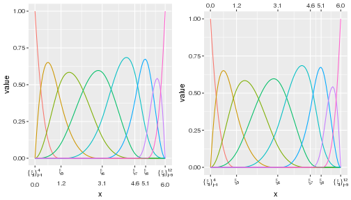
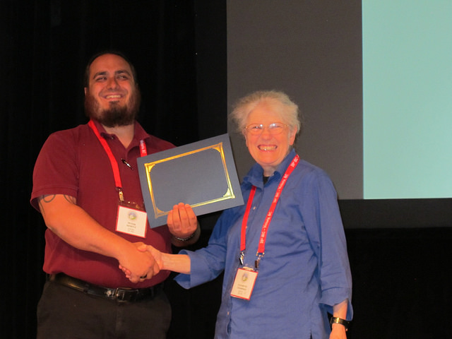

Minding Broken Clocks
About
Blog Roll
Peter E. DeWitt, Ph.D.
Categories
All
(13)
R
(5)
abstract
(2)
awards
(2)
cache
(1)
conferences
(2)
cpr
(2)
data summaries
(1)
ggplot2
(1)
git
(1)
knitr
(1)
news
(7)
package development
(1)
phd
(3)
programming
(3)
publications
(1)
qwraps2
(2)
sepsis
(1)
Site Rebuild
news
Rebuilding the site
Oct 1, 2024
Peter E. DeWitt
A New Era For Diagnosis and Research in Pediatric Sepsis
news
publications
sepsis
Two major publications in the Journal of the American Medical Association (JAMA) have been released International Consensus Criteria for Pediatric Sepsis and Septic Shock and …
Jan 21, 2024
Peter E. DeWitt
Installing Package Dependencies without external http(s) requests
R
programming
package development
Consider you have a server that is running behind a firewall and, for security reasons, cannot make external http(s) requests. Further, you have R running on this server and…
Feb 25, 2018
Strother Walker Award
awards
news
The faculty of the Department of Biostatistics and Informatics has awarded me the
2017 Strother Walker Award
based on outstanding work on your dissertation, and your many…
Apr 21, 2017
Peter DeWitt
Ph.D. Dissertation Defended
phd
news
cpr
I have successfully defended my Ph.D. dissertation: “Parsimonious B-Spline Regression Models via Control Polygon and Control Net Reduction for Identifying Factors Explaining…
Apr 10, 2017
git diff pdfs
git
Binary files and git repositories can be a pain, especially when looking at the
git diff
output. Here are two helpful things to do with git to make working with .pdfs less…
Apr 3, 2017
Peter DeWitt
10th International Conference on Health Informatics
news
abstract
conferences
I presented a paper at the 10th International Conference on Health Informatics in Porto Portugal, Feb 21-23, 2017. HealthInf is part of BIOSTEC.
Feb 24, 2017
(lazy)Loading Cached Chunks into an Interactive R Session
R
knitr
cache
qwraps2
If you cache code chunks when using knitr to generate reproducible documents then you’ve likely had the issue arrise of needing to load the results of cached chunks into an…
Jan 3, 2017
Peter DeWitt
Baseline Characteristics Tables with qwraps2
R
data summaries
qwraps2
Almost every biomedical research paper requires a “Table 1: baseline patient characteristics.” Many developers have published tools to help streamline the construction of…
Dec 19, 2016

Secondary Axis in ggplot2 v2.2.0
R
programming
ggplot2
phd
The recent release of Hadley Whickham’s ggplot2 version 2.2.0 included several new features. Notably
Nov 15, 2016
Updating Call Arguments
R
programming
The
stats::update
function is one of my favorite tools in R. Using this function saves a lot of time and effort when needing to modify an object. However, this function has…
Nov 10, 2016
dewittpe.github.io Set up
news
I’ve spent the last several hours of yesterday this early morning putting the initial dewittpe.github.io page together. I hope you, the wandering web surfer, or the…
Oct 26, 2016

The 28th International Biometric Conference
Best Student Oral Presentation
abstract
conferences
awards
cpr
phd
news
The International Biometric Society (IBS) held the 28th International Biometric Conference 10-15 July, 2016 in Victoria, British Columbia, Canada. I had submitted my some of…
Jul 16, 2016
Peter E. DeWitt
No matching items